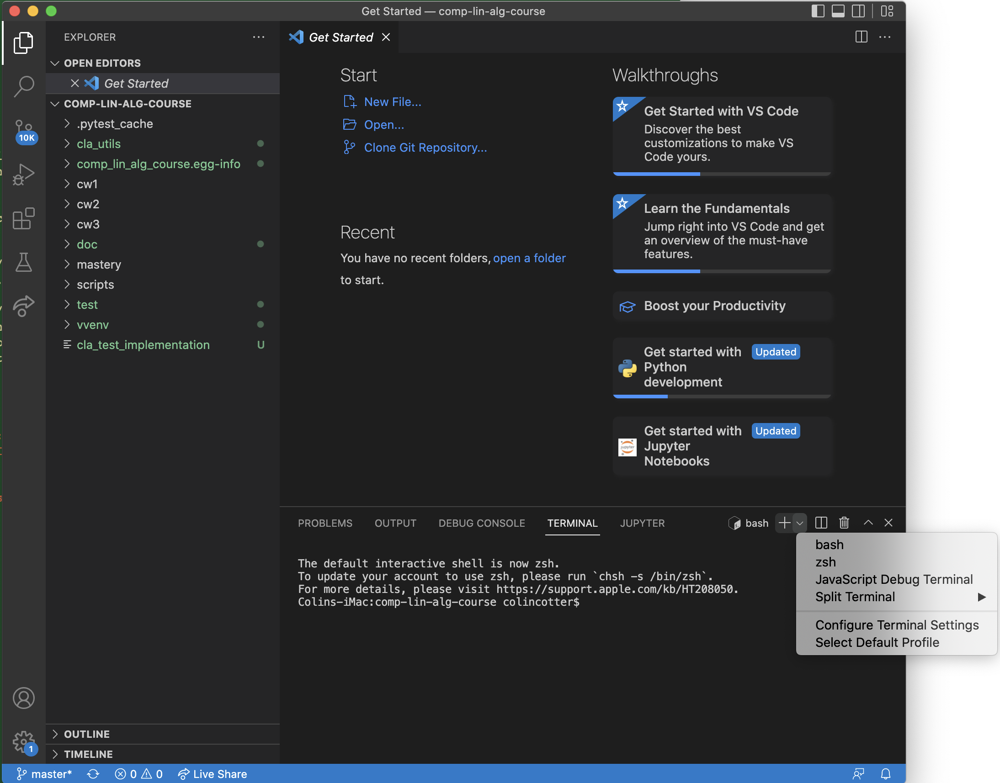

1. Getting ready for computational exercises¶
In the course notes you will encounter computational exercises for you to complete. The object of these exercises is to build up understanding about how computational linear algebra algorithms actually work. Along the way you will have the opportunity to pick up valuable scientific computing skills in coding, software engineering and rigorous testing. They involve completing unfinished “skeleton” code, which we will then use in the courseworks.
In this preliminary section, we will explain how to get set up to do the computational exercises. If you have taken Principles of Programming (a second year optional course on our undergraduate Mathematics programme) then you will have already been shown how to do most of this. If not, we will provide some links to some material on that course that it is well worth reading.
You can use your own laptop running Windows, Linux, or macOS.
There is a lot of information below, but here is a summary checklist to check that you have everything ready to do your work.
Install Python, Git and a text editor using the instructions below.
Create a working folder and put a virtual environment in it (venv).
Clone your course repository from Github Classroom into the working folder.
Activate the venv.
Install
numpyto the venv, andpytest.Install the course module to the venv.
Remember to activate the venv every time you work on the course module.
Make sure that you understand how to run code in the course repository (including your own code you have added).
Make sure that you understand how to commit your changes to your Git repository and how to push them to Github.
Make sure that you know how to run the tests.
To follow these steps read the sections below.
1.1. Getting the software that you need¶
The core requirements are Python (version >=3.7), Git, and a Python-aware text editor.
In order to write the code required for the implementation exercise, you’ll need to use a Python-aware text editor. There are many such editors available and you can use any you like. If you haven’t used Python and/or Git before, it is a good idea to use Visual Studio Code (VSCode) which is a Python-aware text editor, since VSCode also provides a Terminal and an interface to Git.
Up to date information on how to install Python, Git and VSCode on a Windows, Linux or Mac machine is available at the Installing the necessary software section of the Principles of Programming website.
Install Python, Git and VSCode (or your preferred text editor for coding) on your computer that you will use for this course.
Hint
If you are a Mac user, you’ll need to avoid using the preinstalled Python on your system, as it is a very cut down version for interacting with the MacOS. You should install a fully featured Python (using Anaconda or Homebrew, as described in the link above).
Hint
If you want to use Imperial’s computer lab machines, they have the software you need installed, in some cases via the Software Hub. To get started, double click the Software Hub icon on the desktop or visit the Software Hub page.
1.2. The Terminal¶
A lot of the routine activity involved in this module revolves around executing commands on the Bash terminal (sometimes referred to as the “command line”). For example you use the terminal to work with the revision control system. If you’re not familiar with the Linux terminal, then you can read this brief guide to the terminal. That guide focusses on the Bash shell, which is the one we will use.
Hint
In VSCode you can get a terminal by selecting New Terminal from the Terminal menu. This should open a Terminal window on your VS Code screen. To the top right of this window is a pulldown menu to select the interpreter, which needs to be Bash. The image to the right shows this pulldown menu.
{kind=link}
Hint
In VSCode, to ensure you are using the correct Python interpreter,
Go to the View menu and select the Command Palette.
Start typing Python: Select Interpreter, and click on it when it comes up.
Select the correct Python interpreter from the pulldown menu (on Mac, the one you installed from Homebrew or Anaconda, on Windows, the one that you installed from the Microsoft Store).
1.3. Python virtual environment¶
The next step is to set up a Python virtual environment using the Terminal. This is described in Section 1.2 of the Principles of Programming website.
Create a new virtual environment for your Computational Linear Algebra work and activate it, following the instructions of Section 1.3 of PoP linked above.
Two differences are as follows.
You should name the working folder something more relevant to this course!
You should name the venv:
clavenv
instead of:
PoP_venv
Hint
It is recommended you keep this name to avoid spuriously committing venv files to the git repository. If you decide to give your venv a different name, please add that name to the .gitignore file in your git repository. If you don’t know what this means, it is probably best to use the name “clavenv”.
Following the instructions in Section 1.3
of the Principles of Programming website, install the numpy and
pytest packages to your venv (don’t forget to activate it first).
1.4. GitHub and git¶
Revision control is a mechanism for recording and managing different versions of changing software. This enables changes to be tracked and helps in the process of debugging code, and in managing conflicts when more than one person is working on the same project. Revision control can be combined with online hosting to provide secure backups and to enable you to work on code from different locations.
In this module, you’ll use revision control to access the skeleton files. You’ll also use the same revision control system to record the edits you make over time and to submit your work for feedback and, eventually, marking.
We will be using the revision control system git, which has cornered the market in this area now. We’ll be combining git with the online hosting service GitHub.
There is a brief introduction to Git in the Just Enough Git to Get By section of the Principles of Programming website.
Read through (or review, if you read it before) Sections 2.1, 2.2, and 2.3 of Just Enough Git to Get By.
Configure your Git installation by following the instructions in Section 2.4 of Just Enough Git to Get By.
Hint
These instructions involve typing into the Terminal. VSCode provides other ways to configure but it is much easier to get help if you are typing into the Terminal. Make sure that you have selected the Bash interpreter for your Terminal.
Create and/or setup your Github account following the instructions in Section 2.5 of Just Enough Git to Get By.
If you have not done it before, complete the simple exercise in Section 2.6 of Just Enough Git to Get By. This exercise uses the Git Training Assignment which is linked on Blackboard, which you should clone into your working folder.
Hint
Above all else, never use:
git add -A
or:
git add *
to add all the files in the repository. This is bad practice and makes a mess for the markers, making them grumpy. When you commit changes to files in your repository for this course, just use:
git add
to add the files you changed to the list of files to be updated in the commit history.
Similarly, VSCode has a graphic interface for Git. It is preferred to use the Terminal in this course, as it is easier to get help. If you do decide to use the graphic interface, just ignore any files that are marked as not added. Do not try to click them to remove the marks.
Warning
Never clone a repository inside the folder of another folder.
1.5. Setting up your repository¶
We’re using a tool called GitHub classroom to automate the creation of your copies of the repository. Follow the link on Blackboard marked “Course Repository” to create your personal repository for the course. Then, clone it to your working folder on your computer following the instructions in the previous section.
Warning
When you follow the link, you will be asked to select your “school’s identifier” from a list. This will be your user ID that you use to log into Outlook (e.g., sbc21). If you don’t find your ID on the list, do not click “Skip to the next step”. And, do not click someone else’s ID! Instead, contact the course leader and ask to have your user ID added. We need to do this so that we can grade your work.
Hint
To change folder in the terminal, type cd <path> where <path> is the path to the folder you want to change to. Paths can be “absolute” e.g. /home/users/jbloggs/comp-lin-alg/ or “relative” e.g. if you are currently in /home/users/jbloggs then you can use comp-lin-alg. Typing pwd shows the current path, and typing ls shows the contents of the current folder. Typing cd .. changes to the enclosing folder, and typing cd - changes back to the previous folder. For more information see the “brief guide to the terminal” linked above.
Hint
In VSCode, you will be asked if you want to make this venv the default for your project. Select “yes” as this will help to ensure that it is activated.
Hint
Every time you want to work on the implementation exercises and courseworks, you need to activate the venv.
Warning
Your classroom repository will contain a branch called “feedback”. Do not commit to, or remove, this branch. This is how we will provide feedback on your code.
1.5.1. Installing the course package to the venv¶
In this course we will be working on skeleton code stored as a Python package in the repository. This means that we will be able to import everything as a module using from cla_utils import * without needing to be in a particular folder. This is what makes the tests work, for example.
Install the course package to your venv. To do this:
Activate the clavenv as above.
Change folder to the repository that you just checked out (this should contain folders called doc, cla_utils, test, etc.).
Type python -m pip install -e .
1.6. How to do the computational exercises¶
For the computational exercises, quite a lot of the coding infrastructure you will need is provided already. Your task is to write the crucial mathematical operations at key points, as described on this website.
The code on which you will build is in the cla_utils folder of
your repository. The code has embedded documentation which is used to
build the cla_utils package web documentation.
As you do the exercises, commit your code to your repository. This will build up your computational exercise solution sets. You should commit code early and often - small commits are easier to understand and debug than large ones. Push your commits to your remote repository on Github.
Hint
In Git, we use the Terminal to commit changes and push them to the remote repository on Github Classroom. A repository is a record of the history of the code as you are working. To add a file to the list of files whose changes will be committed to the repository, type git add <filename> -m <log message>, where <log message> is a short description of the changes you made. To commit those changes, type git commit. They will now be saved locally. To push these changes to the “remote” repository on Github Classroom, type git push (you may be asked to set the name of the remote, just paste the suggested command into the Terminal). To pull changes from the remote repository on Github Classroom, type git pull. For further features and better explanation, please take a look at the Github Tutorial linked above.
Warning
Never use git add *, since this will add unwanted files to the repository which shouldn’t be there. You should never add machine specific files such as your venv, or .pyc files which are temporary machine specific files generated by the Python interpreter. This really slows down the marking process and makes the markers grumpy. You should only add the .py files that you are working on.
Warning
Do not commit to the feedback branch. This branch is just there so that we can provide feedback on your changes to the main branch, and if you commit there, it will mess up our marking system.
1.7. Running your work¶
If you want to execute your code written in cla_utils, this can be imported into IPython (in the terminal, or using a Jupyter notebook), or in a script.
To use IPython, type ipython in the Terminal (when the venv is
activated). You may need to install it first using python -m pip install
ipython (you must start the venv first). Then you can import
cla_utils interactively using from cla_utils import *. To exit
IPython type Ctrl-D.
Briefly read this Information about IPython.
If you also import numpy then you can create
example numpy arrays and pass them to cla_utils functions to try
them out. You can also do this in a script, e.g.:
from cla_utils import *
from numpy import *
A = numpy.array([[1.0,2.0,0.,0.,1.0+1.0j],
[0.0,1.0,3.,0.,0.],
[0.0,0.0,1.,0.,0.],
[0.0,0.0,0.,1.,0.],
[0.0,0.0,0.,0.,1.]])
xr = numpy.array([1.,2.,1.,0.5,0.3])
xi = numpy.array([1.1,0.2,0.,1.5,-0.7])
ABiC(A, xr, xi)
After saving your text to a script with a filename ending in .py, e.g. run_ABiC.py, you can execute the script in the Terminal by typing python run_ABiC.py (remember to change to the folder where the file is located). Scripts are better because you can run the whole thing again more easily if you make a mistake, and you can save them.
Briefly read this information about Python scripts.
Warning
Don’t clutter up your repository by adding these experimental scripts with git add. If you want to store them it is best to use another separate git repository for that.
1.8. Testing your work¶
As you complete the exercises, there will often be test scripts which
check the code you have just written. These are located in the
test folder and employ the pytest
testing framework. You run the tests with:
python -m pytest test_script.py
from the bash Terminal, replacing test_script.py with the
appropriate test file name (remember to activate the venv first). The
-x option to pytest will cause the test to stop at the first
failure it finds, which is often the best place to start fixing a
problem. For those familiar with debuggers, the --pdb option will
drop you into the Python debugger at the first error.
You can also run all the tests by running pytest on the tests
folder. This works particularly well with the -x option, resulting
in the tests being run in course order and stopping at the first
failing test:
python -m pytest -x
You should make sure that your code passes tests before moving on to the next exercise.
1.9. Coding style and commenting¶
Computer code is not just functional, it also conveys information to the reader. It is important to write clear, intelligible code. The readability and clarity of your code will count for marks.
The Python community has agreed standards for coding, which are documented in PEP8. There are programs and editor modes which can help you with this. The skeleton implementation follows PEP8 quite closely. You are encouraged, especially if you are a more experienced programmer, to follow PEP8 in your implementation. Full code marks will require PEP8 compliance.
1.10. Skeleton code documentation¶
There is web documentation for the complete cla_utils package. There is also an alphabetical index and a search page.